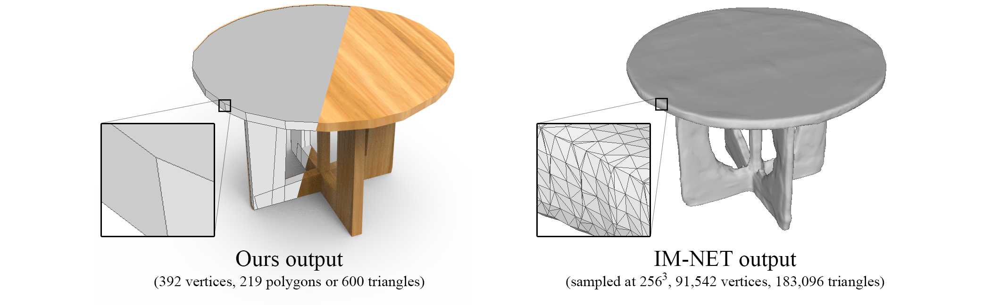
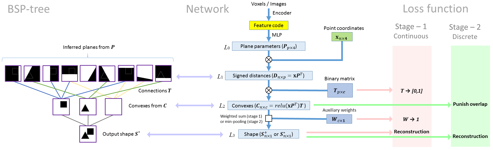
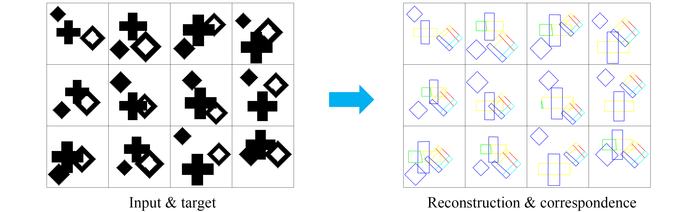
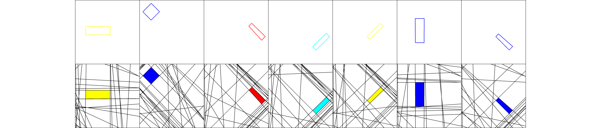
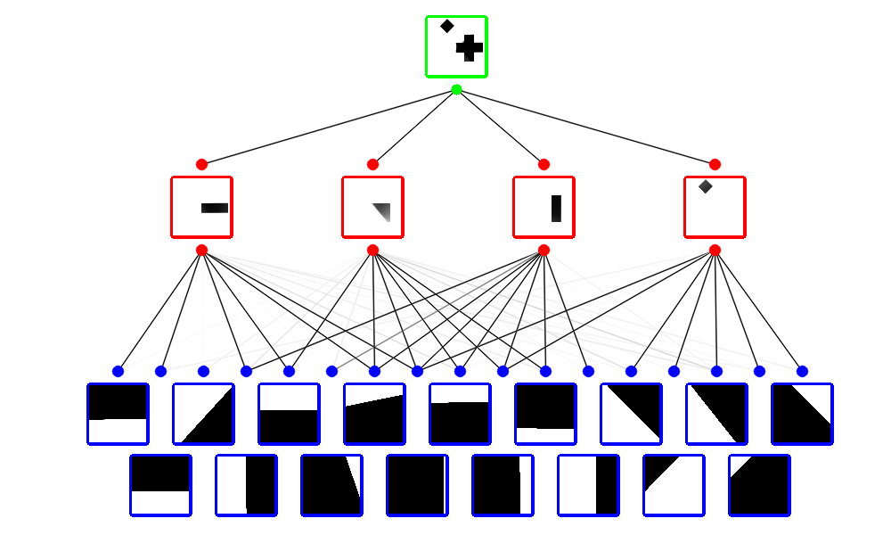
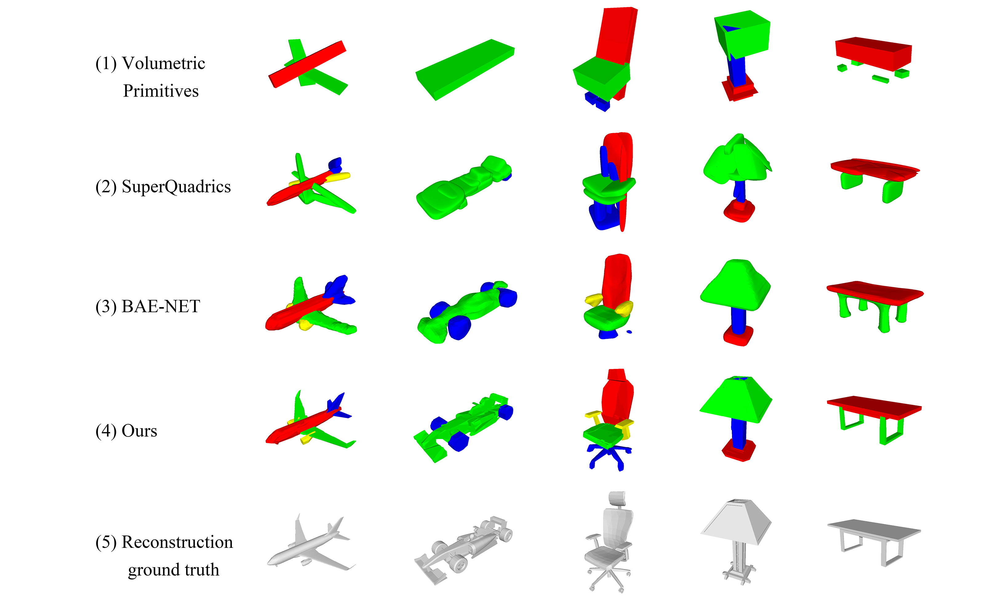
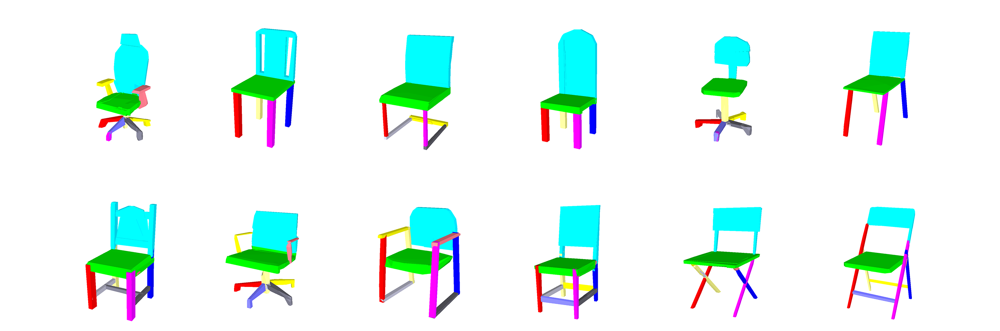
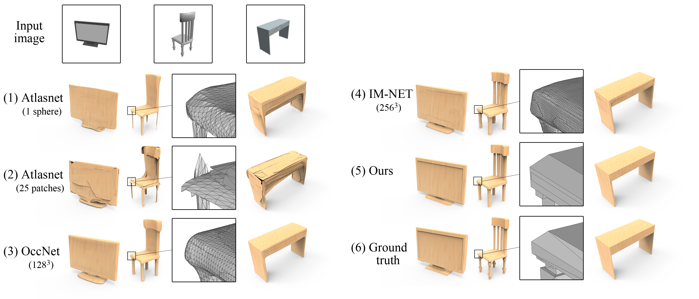

We present BSP-Net, a network that generates compact meshes via binary space partitioning.
Our generated meshes are low-poly and guaranteed to be watertight.
The edges can reproduce sharp details, yet can still approximate curved boundaries.
- Video -
- Compactness -

Our BSP-Net generates compact, i.e., low-poly meshes.
The outputs can reproduce sharp edges and approximate smooth geometry.
Implicit models such as IM-NET need to be iso-surfaced,
resulting in over-tessellated meshes which only approximate sharp details with smooth surfaces.
- Method -

Our key idea is derived from binary space partitioning trees.
As shown on the left, given a set of oriented planes, and the connections to group them,
we can compute the intersection within each group to obtain convex shapes, and then take their union to construct the final output.
The entire process is based on CSG operations, hence, the output shape is a polygonal mesh.
We designed the network in such way that each component represents a part of the BSP-tree.
Please check the oral video or the paper for details.
- Results -
2D reconstruction & decomposition

In our toy 2D experiment,
the task of the network is to reconstruct each image as a combination of convex parts.
Since all shapes share the same set of convexes and tree connections,
we find shape segmentations and correspondences in the convex level.
Below, we show a few convexes from the first shape, and the planes to construct them.

A visualization of the training process can be found in our oral video.
A snapshot is shown below.

3D reconstruction & decomposition

We compare our method with several other methods that perform shape decomposition via reconstruction,
including Volumetric Primitives, SuperQuadrics, and BAE-NET,
Our method not only achieves better reconstruction quality, but also has better segmentation results.
Similar to the 2D case, we can find natural correspondences between convexes.
Below, we manually group convexes into semantic parts and visualize correspondences using different colors.

Single View Reconstruction

Since our BSP-Net is a differentiable 3D decoder,
we can easily pair it with an image encoder to achieve single view reconstruction.
We compare with several state-of-the-art methods,
including AtlasNet, Occupancy networks, and IM-NET,
to show the representation ability of our network and the compactness of the outputs.
Please pay attention to the close-ups of mesh tessellations.
There is a recent work, CvxNet, that also performs convex decomposition.
Our method differs from theirs, as we target low-poly reconstruction,
and our network has a dymanic number of convexes for different shapes.
- Citing this work -
If you find this work useful in your research, please consider citing:
@article{chen2020bspnet,
title={BSP-Net: Generating Compact Meshes via Binary Space Partitioning},
author={Zhiqin Chen and Andrea Tagliasacchi and Hao Zhang},
journal={Proceedings of IEEE Conference on Computer Vision and Pattern Recognition (CVPR)},
year={2020}
}